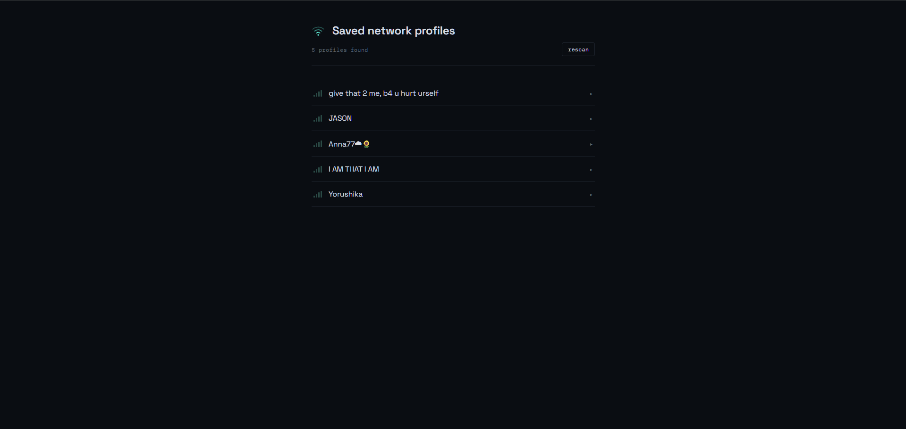
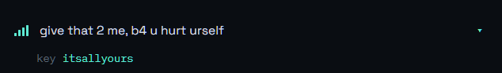
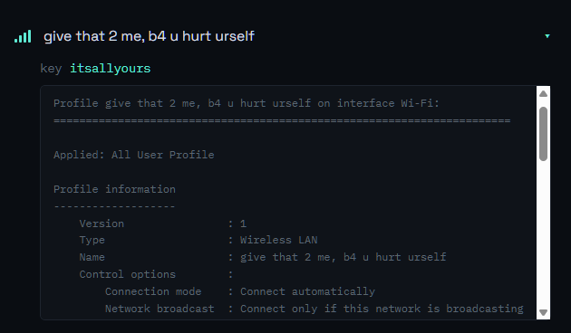

Every WiFi you've connected to on this machine shows up as a row, with signal bars standing in for a saved profile.

assets/step-1-network-list.pngThe row expands and shows the saved key right under the name — nothing else needed.

assets/step-2-password-reveal.pngAuthentication type, cipher, connection mode — the complete profile dump, in case the password alone isn't enough.

assets/step-3-raw-details.pngDoes that make sense so far?